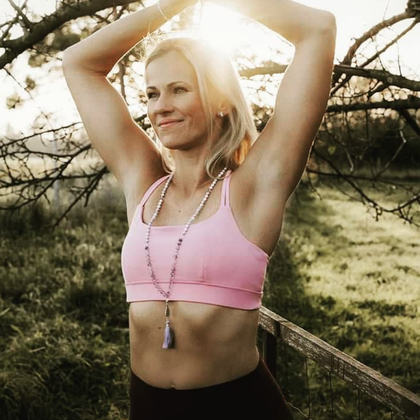
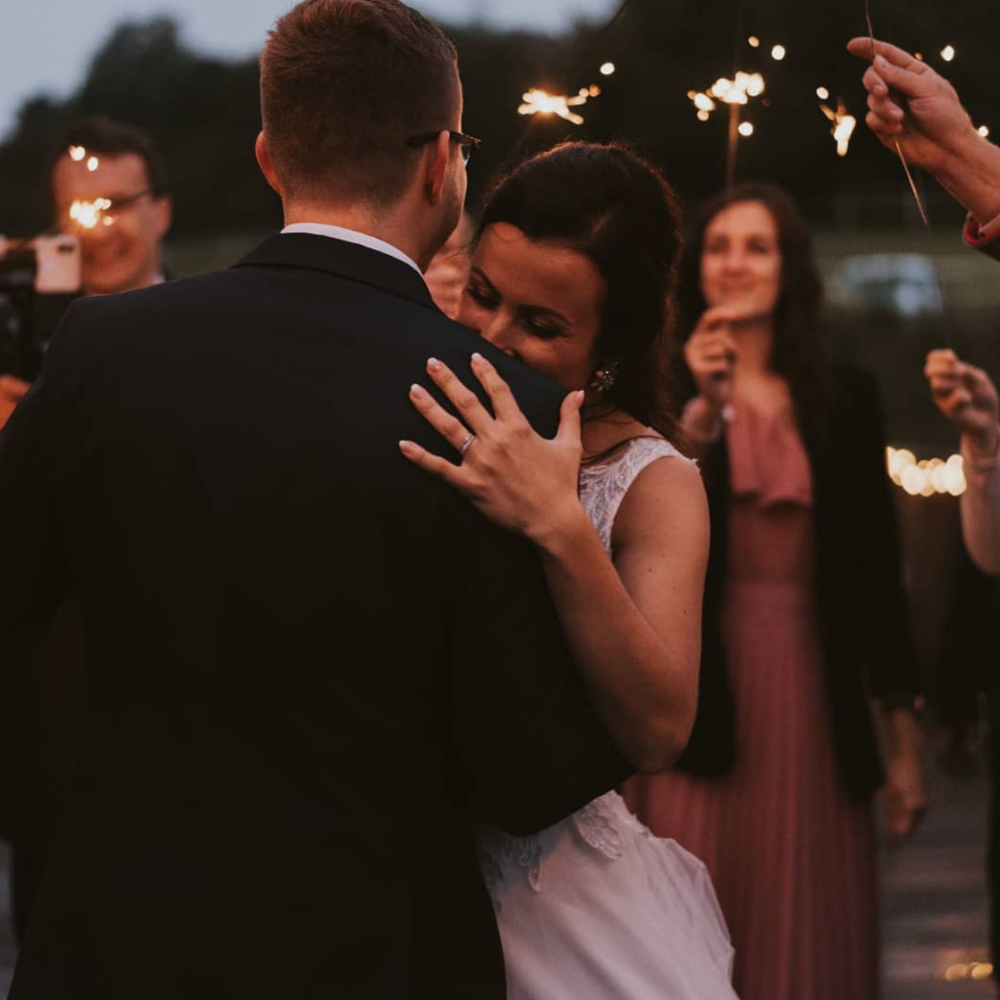
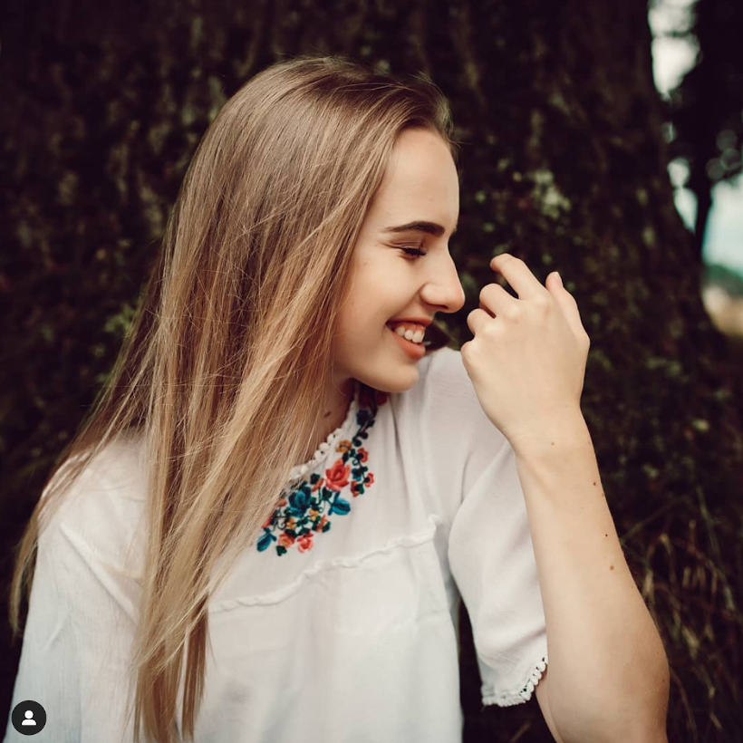
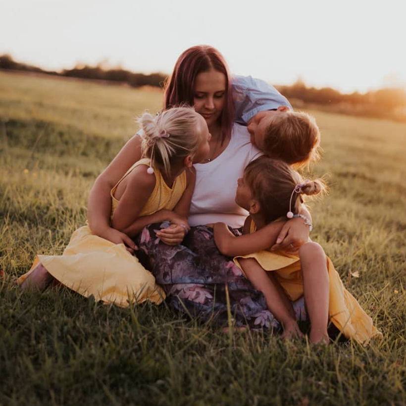
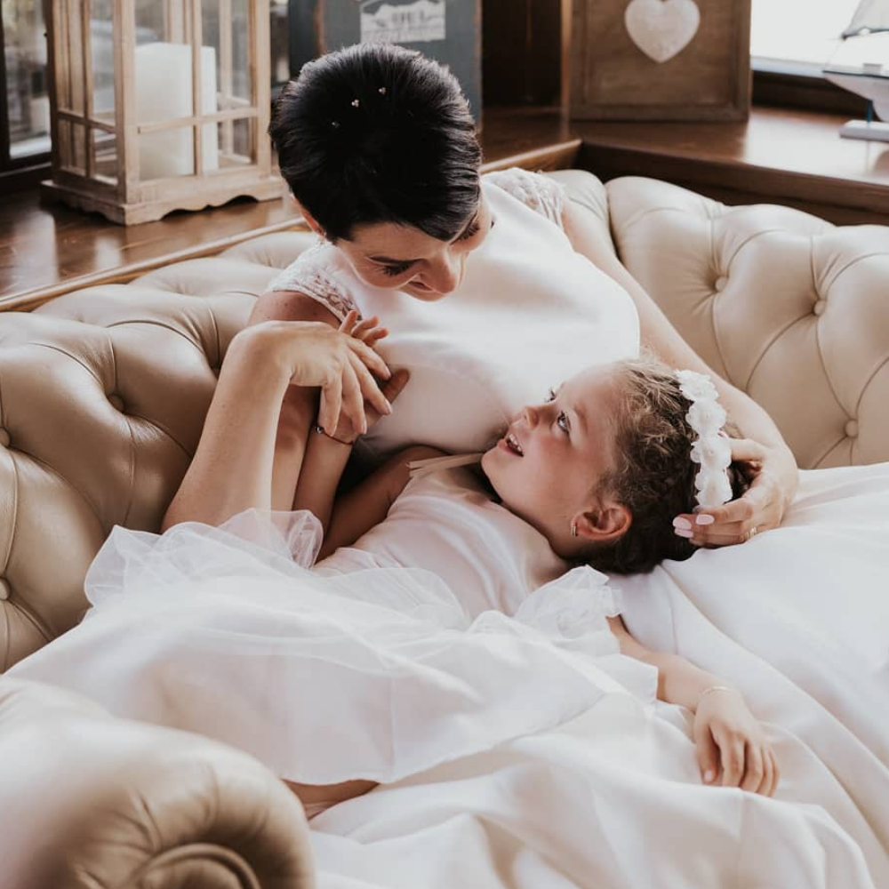
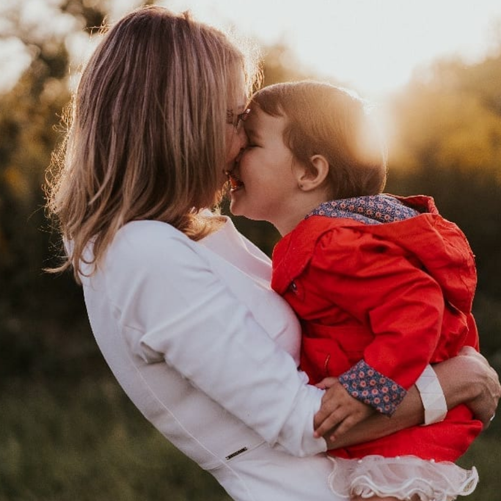
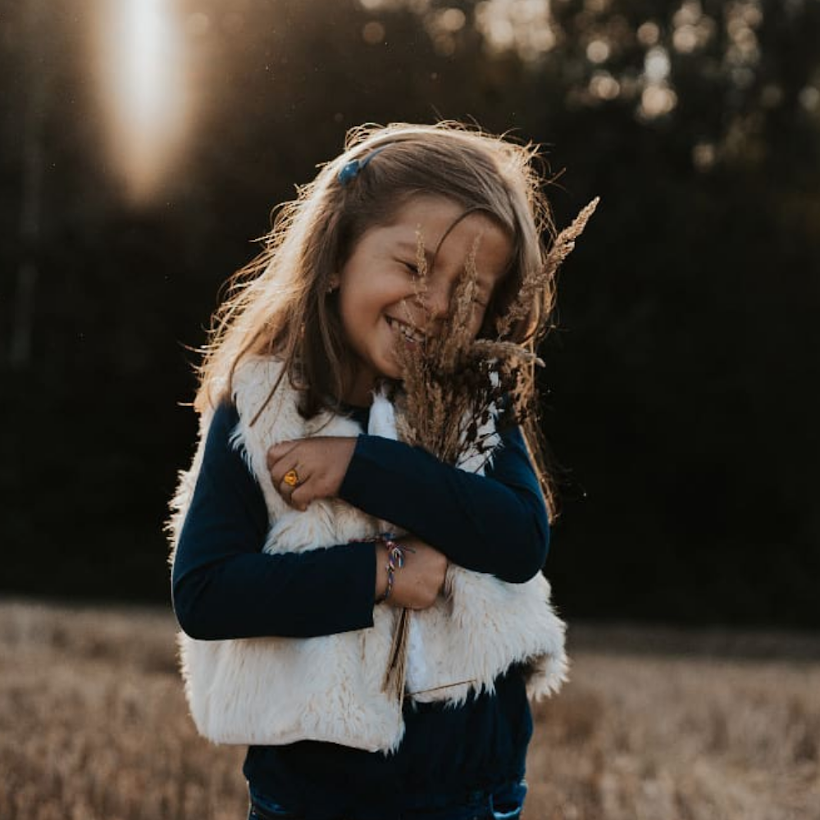
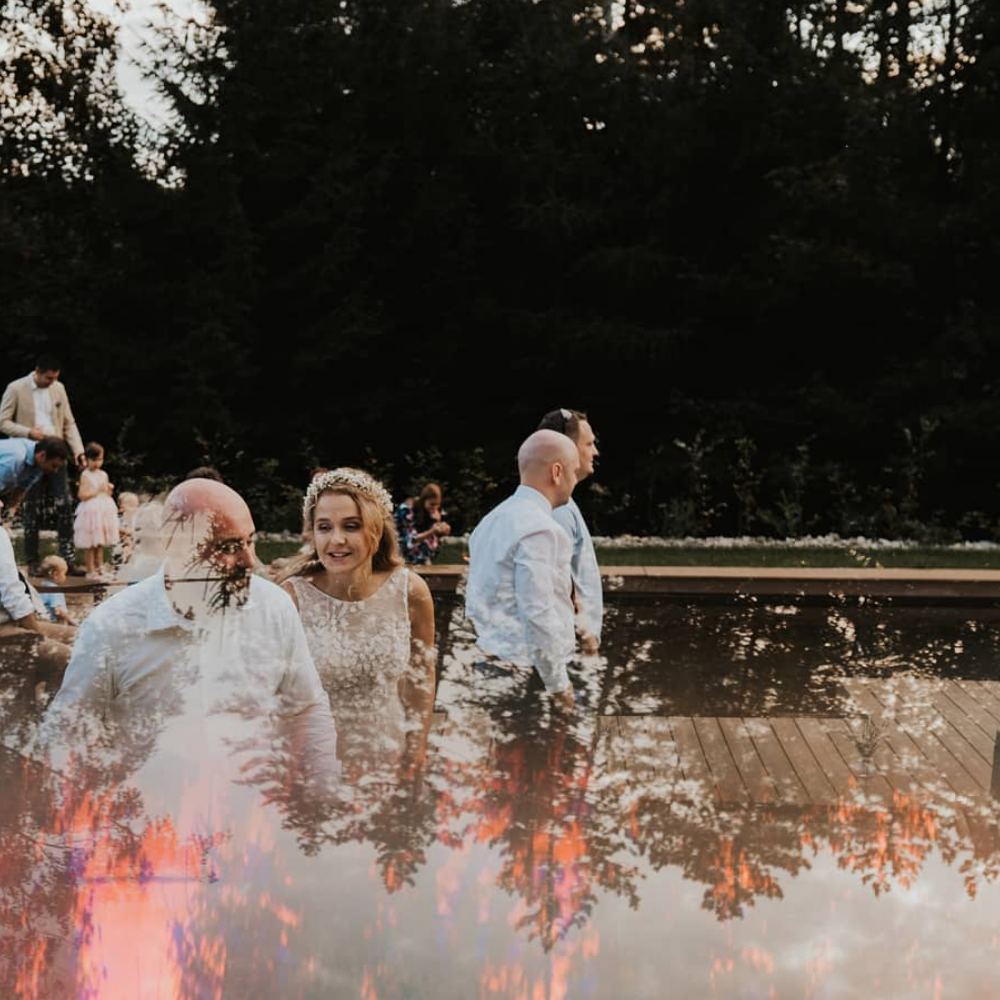

FILOZOFIE & PŘÍSTUP
"Užijte si váš den naplno"
Každý jste jedinečný, proto vás fotografie z vašeho významného dne budou
odrážet
autenticky, bez nepříjemného pózování.

Rozhodli jste se pro kostel, stodolu nebo louku. Máte v plánu pozvat dva
svědky nebo dvě
stě svých nejbližších. Ať už si užíváte luxusní servis nebo přirozené prostředí v hospodě, to
jsou pouhé detaily. Základem dne je oslava člověka, se kterým jste se rozhodli strávit zbytek
svého života. Je to vše o lásce, slibech, které skládáte, a lidech, se kterými to sdílíte.

Dám vám směr, pokud to budete potřebovat. Budu respektovat váš prostor, budu
tiše
organizovaná, bezstarostná a ostražitá, věnovat se dosažení svých nejlepších výsledků.

Důležitými nosníky úspěšných výsledků jsou příběhy, emoce, pravost,
pozornost... Nejsem formální ani neosobní, což vy určitě také ne :)

Jsem velmi organizovaná a vždy dobře připravená. Tato pozornost, věnovaná
detailům, mi
pomáhá být ve vašem dni opravdu flexibilní. Můžete nerušeně odpočívat. Připravenost na neočekávané je
tvůrčí svoboda,
což znamená, že získáte nejlepší možný
výsledek, ať se stane cokoli.

Chcete být uvolnění a nejvíce se vám líbí fotografie, vzniklé při náhodných
momentkách? Já
také, ale také vím, že ve svůj svatební den potkáte nejdůležitější lidi ve svém životě. Velmi
ráda zaznamenám tuto vzácnou chvíli pomocí několika formálnějších rodinných portrétů.
Budou to tradiční skupinové záběry s usměvavými tvářemi, ale budou rychlé a zábavné a
nenaruší tok dne.

Mám ráda práci, kterou dělám, ale beru ji velmi vážně. Jsem plně připravena
na zálohy,
další karty a baterie. Můžete se tak cítit bezpečně, mám zavedeny pracovní postupy, které
zajistí, že se o vaše fotografie postarám v každé fázi procesu, od okamžitého zálohování
snímků z vašeho dne, k archivaci obrázků pro budoucnost.

A když bude potřeba cokoliv zachraňovat, vždy u sebe nosím šicí soupravu a
tvé tchýni půjčím kabát, pokud ji bude zima.
Znamená to, že na váš den dorazím svěží a připravená zachytit jedinečnost, v tom, jak se odvíjí.

Pro fotografické portfolio, klikněte zde "link bude doplňen"